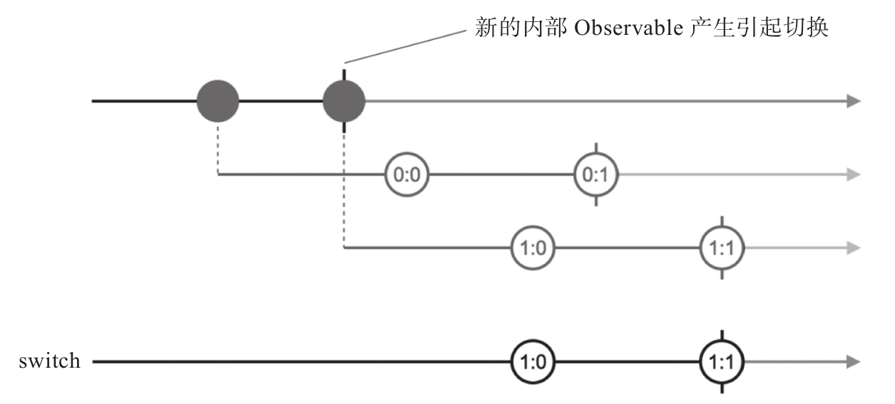
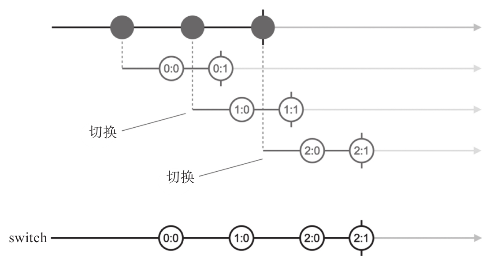
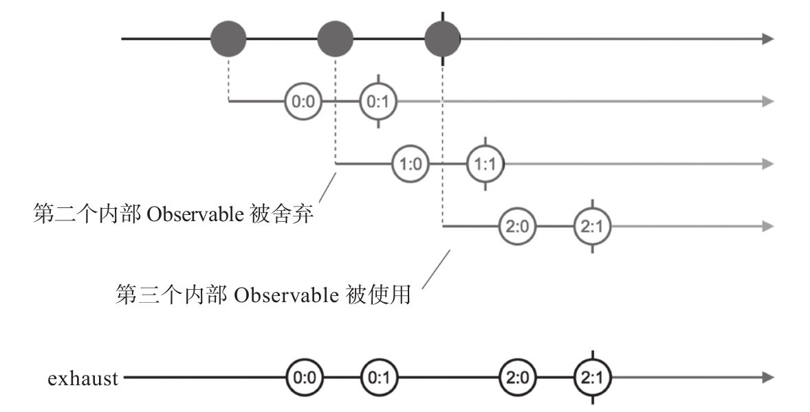

现在读者应该体会到支持高阶Observable的合并类操作符的作用，concat对于concatAll，merge对于mergeAll，zip对于zipAll，combineLatest对于combineAll，主要的区别只是作为输入的Observable对象的形式变化。不带All的操作符输入Observable对象是以操作符调用主体对象或者函数参数形式出现，带All的操作符输入Observable对象是以上游高阶Observable对象产生的内部Observable对象形式出现。
不过，高阶Observable对象还有一个特点，就是产生的内部Observable对象可以是异步的，换句话说，当订阅高阶Observable对象的时候，并不确定何时会有内部Observable对象会产生，一切只能走着瞧。
这样一来，就给处理高阶Observable对象带来一个新的需要，某些场景下上面介绍的带All的操作符都不满足要求。
前面已经介绍过，concatAll存在一个问题，当上游高阶Observable产生Observable对象的速度过快，快过内部Observable产生数据的速度，因为concatAll要做无损的数据流连接，就会造成数据积压。实际上，很多场景下并不需要无损的数据流连接，也就是说，可以舍弃掉一些数据，至于怎么舍弃，就涉及另外两个合并类操作符，分别是switch和exhaust，这两个操作符是concatAll的进化版本。
1.switch：切换输入Observable
switch的含义就是“切换”，总是切换到最新的内部Observable对象获取数据。每当switch的上游高阶Observable产生一个内部Observable对象，switch都会立刻订阅最新的内部Observable对象上，如果已经订阅了之前的内部Observable对象，就会退订那个过时的内部Observable对象，这个“用上新的，舍弃旧的”动作，就是切换。
还是用上面用过的高阶Observable例子来演示switch的用法，修改代码如下：
const ho$ = Observable.interval(1000) .take(2) .map(x => Observable.interval(1500).map(y => x+':'+y).take(2)); const result$ = ho$.switch();
代码的输出如下：
1:0 1:1 complete
switch的功能有点复杂，真的需要弹珠图才能帮助理解，如图5-15所示。

图5-15 switch的弹珠图
switch首先订阅了第一个内部Observable对象，但是这个内部对象还没来得及产生第一个数据0：0，第二个内部Observable对象就产生了，这时候switch就会做切换动作，切换到第二个内部Observable上，因为之后没有新的内部Observable对象产生，switch就会一直从第二个内部Observable对象获取数据，于是最后得到的数据就是1：0和1：1。
注意，这和race有区别，并不是和race一样抢到第一个输出数据就赢了，switch更像是抢山头的游戏，谁抢到了山头，就一直占着山头，直到山头被其他对手抢占。
我们对代码做一些修改，让它产生3个内部Observable对象，就会把这个过程看得更清楚，示例代码如下：
const ho$ = Observable.interval(1000) .take(3) .map(x => Observable.interval(700).map(y => x+':'+y).take(2)); const result$ = ho$.switch();
每个内部Observable产生的间隔是1秒钟，每个内部Observable产生数据的间隔是700毫秒，这样几个内部Observable产生的数据在时间上会有重叠。图5-16是对应的弹珠图。

图5-16 出现数据重叠的switch的弹珠图
从图中可以清楚地看到，第一个Observable对象有机会产生数据0：0，但是在第二个数据0：1产生之前，第二个内部Observable对象产生，这时发生切换，第一个内部Observable就退场了。同样，第二个内部Observable只有机会产生一个数据1：0，然后第三个内部Observable对象产生，之后没有新的内部Observable对象产生，所以第三个Observable对象的两个数据2：0和2：1都进入了下游。
值得注意的是switch产生的Observable对象何时完结，这个对象完结基于两个条件：
·上游高阶Observable已经完结。
·当前内部Observable已经完结。
只满足上面其中一个条件，并不会让switch产生的Observable对象完结：如果上游高阶Observable对象没有完结，意味着可能会有新的内部Observable产生；如果内部Observable没有完结，毫无疑问应该继续产生数据。
2.exhaust
exhaust的含义就是“耗尽”，这个操作符的意思是，在耗尽当前内部Observable的数据之前不会切换到下一个内部Observable对象。
同样是连接高阶Observable产生的内部Observable对象，但是exhaust的策略和switch相反，当内部Observable对象在时间上发生重叠时，情景就是前一个内部Observable还没有完结，而新的Observable又已经产生，到底应该选择哪一个作为数据源？switch选择新产生的内部Observable对象，exhaust则选择前一个内部Observable对象。
下面是使用exhuast的示例代码：
const ho$ = Observable.interval(1000) .take(3) .map(x => Observable.interval(700).map(y => x+':'+y).take(2)); const result$ = ho$.exhaust();
图5-17是对应的弹珠图。

图5-17 exhaust的弹珠图
对于这个例子，exhaust首先从第一个内部Observable对象获取数据，然后再考虑后续的内部Observable对象。第二个内部Observable生不逢时，当它产生的时候第一个内部Observable对象还没有完结，这时候exhaust会直接忽略第二个Observable对象，甚至不会去订阅它；第三个内部Observable对象会被订阅并提取数据，是因为在它出现之前，第一个内部Observable对象已经完结了。
和switch一样，exhaust产生的Observable对象完结前提是，最新的内部Observable对象完结而且上游高阶Observable对象完结。